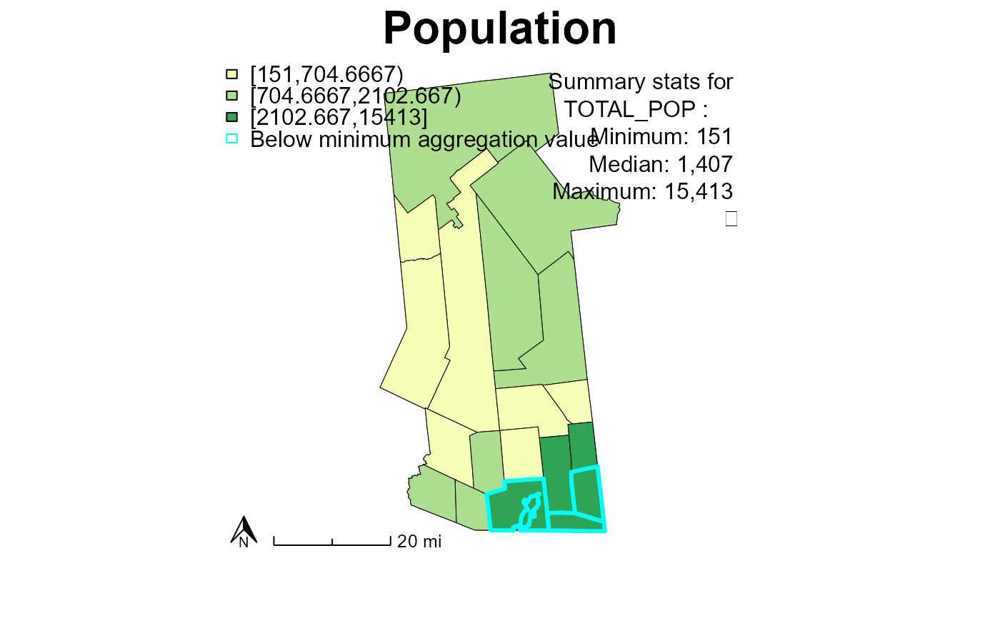
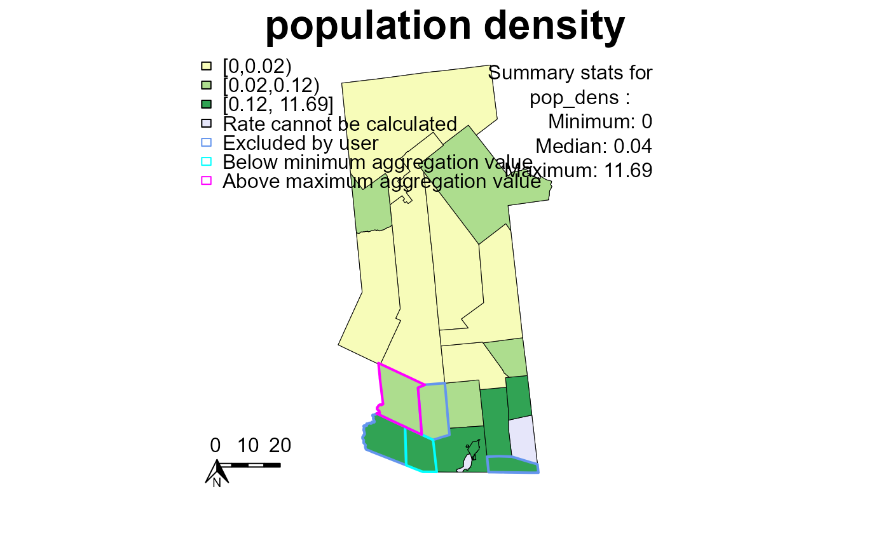

This function draws a choropleth map of a numeric variable. It includes options to display summary statistics and subtitle. The legend produced is dependent on the dataset; if there are no exclusions, no areas below the minimum aggregation value, and no areas with missing rates, their respective entries will be excluded from the legend.
plotGATmaps( area, var, clr = "Blues", title.main = "", class = NULL, after = FALSE, title.sub = NULL, breaks = 5, colcode = NULL, mapstats = FALSE, ratemap = FALSE, closemap = FALSE )
| area | A spatial polygons data frame. |
|---|---|
| var | A numeric variable within the spatial polygons data frame. |
| clr | The color scheme to use for the map, from RColorBrewer. |
| title.main | The map's main title as a text string. |
| class | The cut points for the choropleth categories. Default is NULL, in which case the function calculates breaks from the data using the breaks value. |
| after | Boolean denoting whether the function is mapping the aggregated area "after" map. |
| title.sub | The map's subtitle (if relevant) as a text string. |
| breaks | Number of categories for the choropleth. |
| colcode | Color code predefined for before/after maps. |
| mapstats | A boolean denoting whether or not to include summary statistics: min, median, and max. |
| ratemap | Boolean denoting whether the variable that is to be plotted contains decimal values that require rounding. In GAT, this applies to the GAT-calculated rate. |
| closemap | A boolean to denote whether to close the map window after the map is drawn and saved. |
The map produced by this function is designed to be saved to a recordPlot object for later rendering in a PDF rather than displayed directly. If plotting directly, the display may be distorted. For best results, save to a recordPlot object and write to PDF.
## plot population # create a flag variable (used to check for and map exceptions) hftown$GATflag <- 0 # plot the population plotGATmaps(area = hfcw610k, var = "TOTAL_POP", clr = "YlGn", title.main = "Population", breaks = 3, mapstats = TRUE) ## to plot a rate # create a randomized flag variable (data will not match labels here) # 0 = no flag, 1-3 = excluded by user, 5 = above maximum aggregation value, # 10 = below minimum aggregation value hftown$GATflag <- sample(c(0, 1, 5, 10), nrow(hftown), replace = TRUE, prob = c(.8, .1, .05, .05))  # create a rate hftown$pop_dens <- 10000 * hftown$TOTAL_POP / hftown$AREALAND # add a couple random missings to illustrate uncalculated rates hftown$pop_dens[sample(length(hftown), 2)] <- NA # plot the rate plotGATmaps(area = hftown, var = "pop_dens", clr = "YlGn", title.main = "population density", breaks = 3, mapstats = TRUE, ratemap = TRUE) 